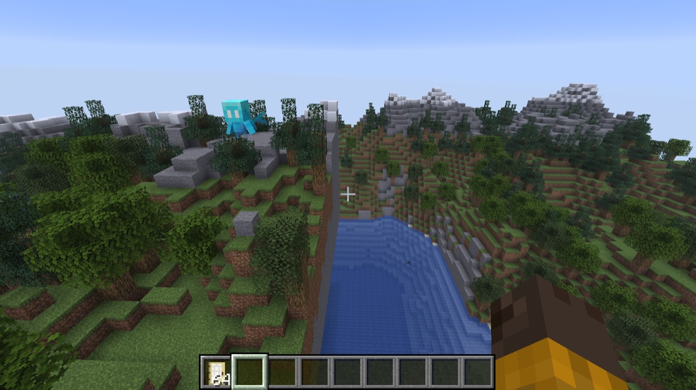
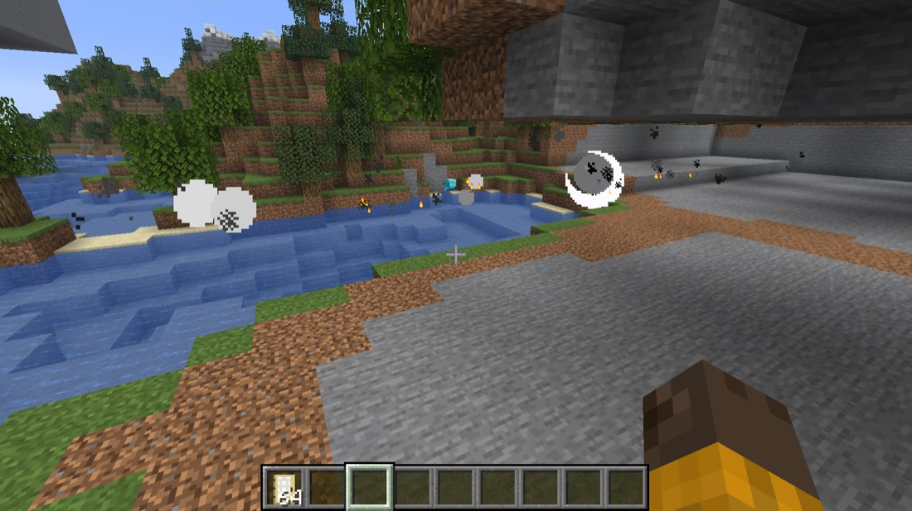
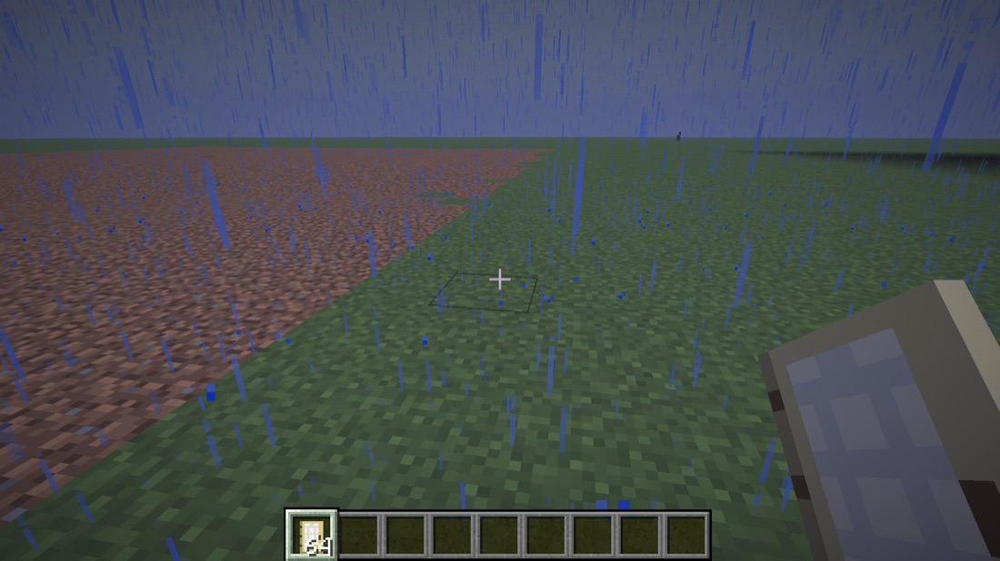

← マインクラフトで試してみた (4 / 6)
voxel:break_slow)置いた大きな風景 (横 128 マス・山の高さ 40 マス、約 32 万ブロック) を、/function voxel:break_slow で上の段から爆発させながら少しずつ消した記録です。

最初に /function voxel:break_slow を打ったときは、「壊す係が壊しはじめます」と出たあと、妖精が建物の前で動かず、ブロックも消えませんでした。ゲームの記録を調べたところ、爆発の音を鳴らす命令の書き方に誤り (block を blocks と書いていた) があり、壊す段階のファイルが読み込まれていませんでした。また、ワールドの難易度がピースフルだったため、ヴェックスではなくアレイが出ていました。

音の指定を直してやり直したところ、壊す係が飛び回りながら、白い爆発の粒と黒い煙と炎を出して、上の段から順番にブロックを消していきました。水はまわりの枠より先に消えるため、外へあふれ出しませんでした。途中で /function voxel:break_stop を打って止める動きも確かめました。
また、チャット欄で /function voxel:b と打ったときに、内部用の段階ファイル (b0〜b1005) が候補に並んで voxel:break_slow が選びにくかったため、内部用のファイルを voxel:slow/ の下に移しました。

「すべて壊しました」と出て、約 32 万ブロックの風景がすべて消え、平らな地面に戻りました。建物がのっていた場所だけ、地面の草ブロックに光が当たらず茶色い土に変わっており、四角い跡になっていました。マインクラフトの自然な仕組みによるもので、このまま時間がたつと、まわりの緑の草から少しずつ緑に戻ります。
このサイトではアクセス解析に Google アナリティクスとクッキーを使っています (くわしく)。